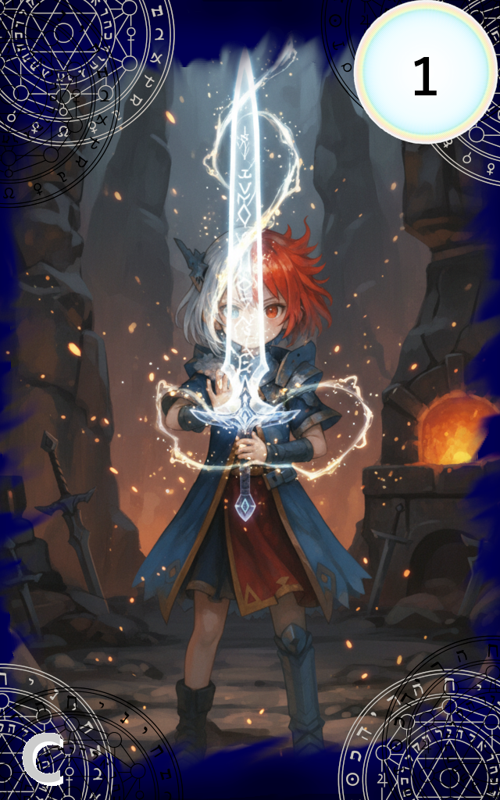

062_刃の創造

レアリティ: コモン (C)
刃の創造
クラス: セフィル・イェツィラー
コスト:1
タイミング:自分のターン
効果:
《セフィロト・コードセフィロト・コード : 装備によりステータス上昇やパッシブ効果を得ます。
攻撃スキルを受けると破損判定が発生し、破壊されるリスクを伴います。》
ATK : 3 DEF : 0
[破損耐性ナンバー]1,2※破損判定の際にこの数字以外の出目が出た場合は破壊される。
《破損時効果》
相手の場のランダムなアルカステラに2点のダメージを与える。
《セフィロト・コードセフィロト・コード : 装備によりステータス上昇やパッシブ効果を得ます。
攻撃スキルを受けると破損判定が発生し、破壊されるリスクを伴います。》
ATK : 3 DEF : 0
[破損耐性ナンバー]1,2※破損判定の際にこの数字以外の出目が出た場合は破壊される。
《破損時効果》
相手の場のランダムなアルカステラに2点のダメージを与える。
創造の書の最初の一歩。
それは、光と魔力を練り上げ
自身の魂の形を模した「始まりの剣」を創造すること。